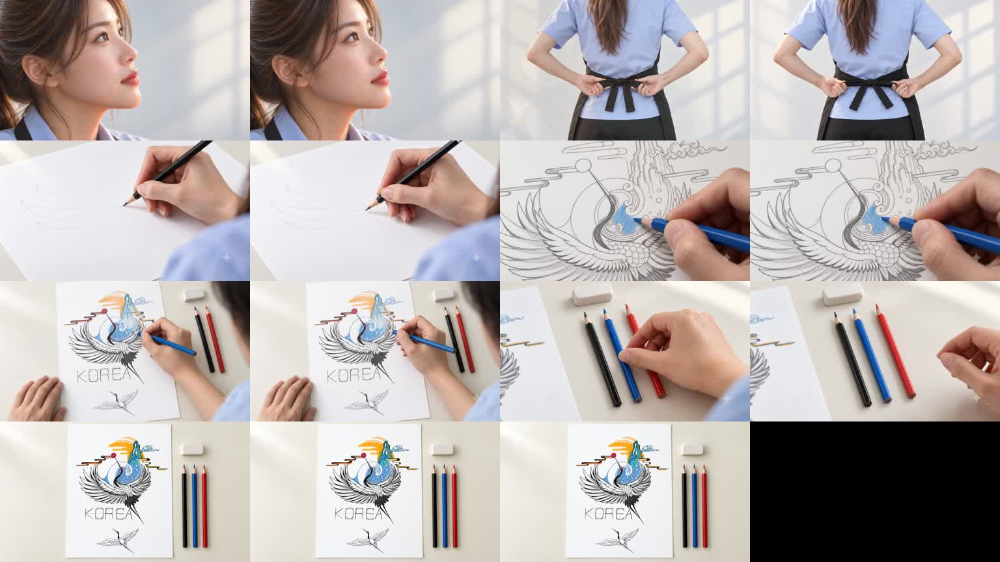

홈페이지 · 스토리보드V7 · 720p 편집본
1280 × 720 · 24fps · 약 15.5초 · 원본 1배속
모델: Omni 1.1 Flash / 720p / 4초 / 1개씩
6회 생성 × 7크레딧 = 42크레딧 / 잔여 277개
반영한 흐름
인물 클로즈업 → 뒤쪽 앞치마 매듭 정리 → 연필 첫 선 → 첫 파란색 → 부분 채색 → 파란 색연필을 놓고 손 빼기 → 완성작 고정 클로즈업. 각 전환은 0.5초 디졸브입니다. 동작을 느리게 바꾸지 않았습니다.
확인 사항
첫 선 1차 생성에서 연필이 닿지 않은 곳에 선이 생겨 제외하고 재생성본을 사용했습니다. 인물 첫 장면과 완성작 엔딩은 확정 이미지를 그대로 유지해 시선·표정 변화와 카메라 이동을 없앴습니다. 새 동작 5장면은 720p 원본입니다.
다만 AI가 만든 연필 접점과 채색 표현의 미세한 정확성, 생성 중 작은 구도 변화는 남아 있습니다. 실제 촬영과 완전히 같은 동작이라고 판정한 결과물은 아닙니다.
편집·비용 기록 JSON · 영상 프롬프트 JSON · 연결 장면 아이디어 5개

이전 V6 · V6 검토 기록